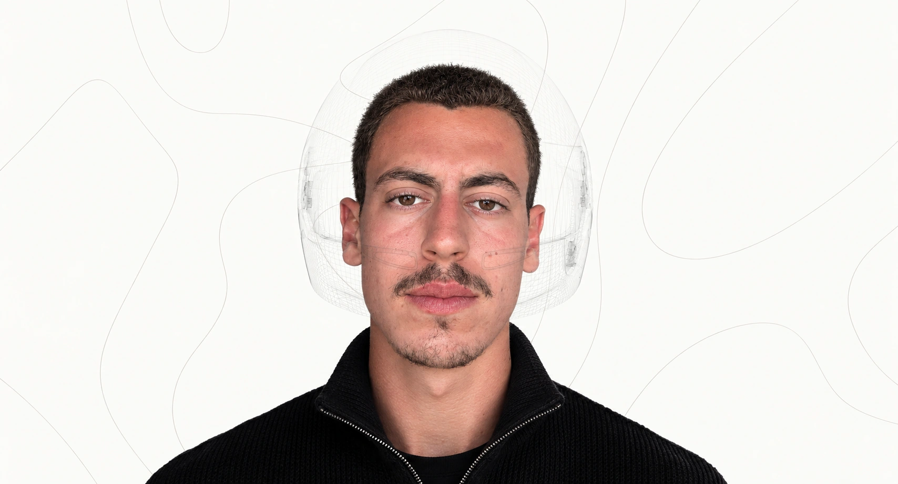
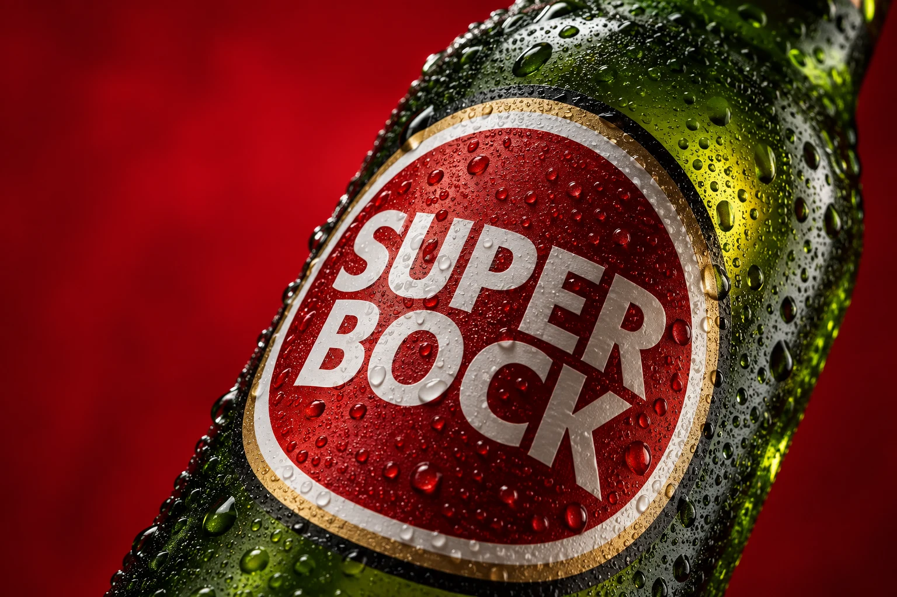

PRESENÇA DIGITAL. NEGÓCIOS REAIS.Uma presença
Conheça a MGL Presence ↓01
Uma presença
que aproxima.
DM Sans para clareza. Instrument Serif para os momentos editoriais. Fotografia em preto e branco, composição centrada e espaço para respirar.
#191A18
#F5F5EF
#B9BEB0
#FAFAF7
01Website.
+
Uma base preparada para apresentar o seu negócio.
Movimento: entrada do retrato, contornos discretos, grafismo do banner, transição circular para o manifesto e arquivo de projetos com deslocamento suave ao rato.

Retrato preparado com geração de imagem a partir das fotografias fornecidas. A secção Sobre usa uma fotografia pessoal original.
